Le persone che rendono possibile il Basket Scicli Meerkat
Dietro ogni singola partita, ogni trasferta e ogni traguardo raggiunto sul campo di gioco c'è un team invisibile agli occhi del pubblico, ma fondamentale per l'esistenza stessa della società. Una macchina organizzativa complessa, dove la passione si fonde con la professionalità e dove il lavoro di squadra e l'impegno profuso da ciascun componente garantiscono la continuità e il funzionamento del progetto societario.
Ogni figura, pur avendo un'area di competenza principale, opera in modo trasversale: la flessibilità e la capacità di adattarsi alle esigenze del momento sono parte del DNA Meerkat.
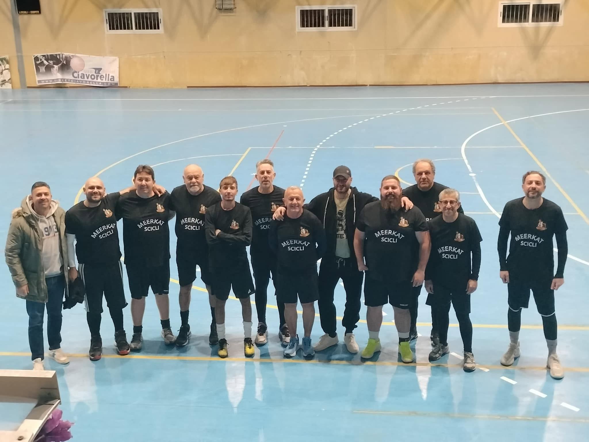
Oltre a ricoprire la massima carica istituzionale ed essere il main sponsor, è grazie al suo impegno e alle sue relazioni sul territorio che si concludono le partnership di sponsorizzazione più importanti per la crescita del progetto.
Il suo impegno si traduce nella programmazione, nell'organizzazione e nella gestione delle risorse. Un importante e delicato equilibrio tra le ambizioni sportive e la sostenibilità societaria. È il collante che unisce la visione della dirigenza alle necessità pratiche quotidiane.
Traduce la passione sportiva in valore e sostenibilità per i partner commerciali. Attraverso lo sviluppo del brand Meerkat e la ricerca di sponsorizzazioni, il suo costante lavoro sul territorio garantisce le risorse vitali per sostenere i progetti della società.
Un profilo polivalente e dinamico, che interviene tempestivamente ovunque si crei un'esigenza — supporto tecnico, logistico e relazioni esterne — fungendo da collante per garantire che tutto funzioni.
Il punto di riferimento quotidiano della squadra. Il suo è un lavoro di costante mediazione, risoluzione di problemi logistici e supporto diretto a giocatori e staff tecnico. La sua presenza assicura che il gruppo si concentri solo ed esclusivamente sul campo.
Il garante della serenità e dell'ordine pubblico durante gli eventi. Il suo impegno assicura che ogni partita si svolga nel pieno rispetto delle normative, offrendo un ambiente sicuro e accogliente per atleti, arbitri e tifosi.
Una figura storica e rassicurante, sempre al fianco della squadra sia in casa che nelle trasferte. Il suo supporto logistico e umano è fondamentale per mantenere alto il morale e risolvere tempestivamente qualsiasi imprevisto organizzativo.
Una figura trasversale fondamentale per il supporto logistico del club. Si occupa della gestione pratica del materiale, della preparazione delle strutture e del supporto organizzativo delle gare interne.
L'uomo delle statistiche, sempre presente e vicino allo staff tecnico, aiuta il coach a capire chi sta rendendo di più o dove la squadra sta soffrendo. Trasforma un lavoro "meccanico" in un ruolo di responsabilità, dando un contributo concreto ad ogni partita.
Il narratore delle gesta dei Meerkat per tutti i tifosi da casa. Con competenza tecnica e trasporto emotivo, garantisce una copertura video e un racconto delle partite live di altissimo livello.
Esperienza pluriennale e massima professionalità nella gestione degli infortuni e nella tutela medica di tutti i tesserati.
Supporto costante e professionale nella cura e nel recupero fisico degli atleti, con dedizione ad ogni seduta.
Presenza preziosa nel trattamento fisioterapico dei giocatori, sempre disponibile nei momenti più delicati della stagione.
La voce ufficiale dei Meerkat. Con la sua energia e il suo carisma infiamma il palazzetto, scandisce i momenti clou della gara e trascina il pubblico, diventando il vero sesto uomo in campo.
L'occhio che permette ai tifosi, sponsor e appassionati di vivere la partita come se fossero in prima fila. Un lavoro di frazioni di secondo, dove la freddezza tecnologica incontra la passione per il basket.
Cattura l'essenza dei Meerkat attraverso l'obiettivo. Il suo lavoro creativo nella produzione di clip, highlights e contenuti social è fondamentale per la digital brand identity della società.
Regista della colonna sonora del match. Sincronizza i ritmi della musica con l'andamento della partita, mantenendo alta la tensione positiva nei time-out e scaldando l'atmosfera durante il riscaldamento.
Con sensibilità musicale e attenzione al ritmo della partita, contribuisce a creare l'atmosfera unica del match casalingo dei Meerkat, rendendolo uno spettacolo da vivere anche fuori dal campo.
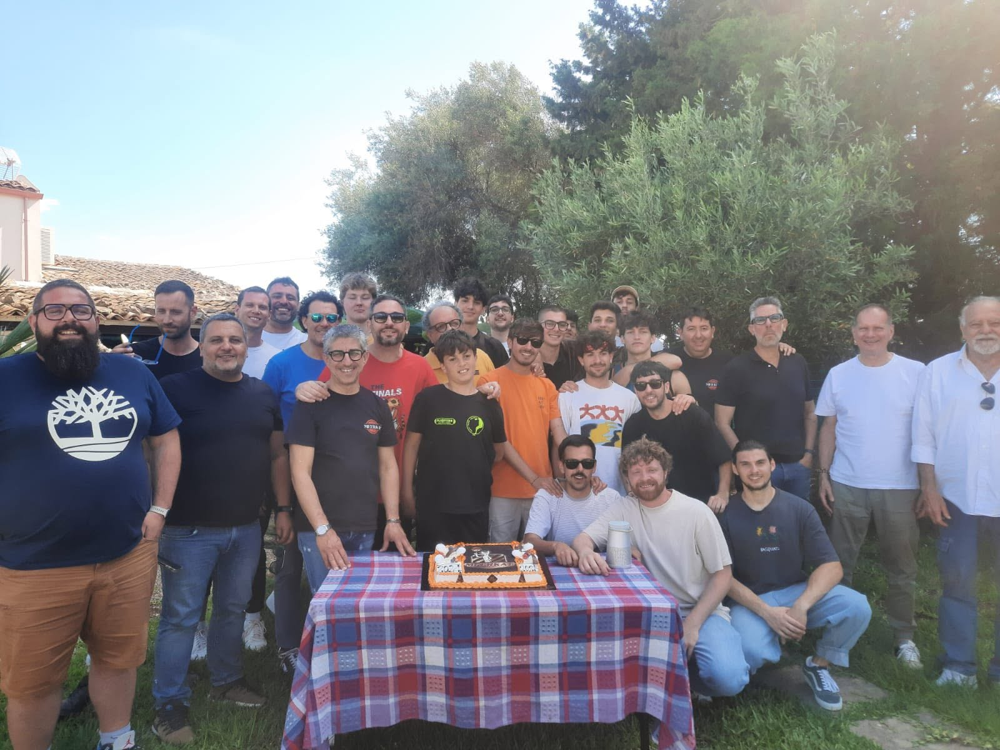
Un gruppo unito, dove ogni tassello è indispensabile per la perfetta riuscita del mosaico complessivo. Un ringraziamento va a ciascuno di loro per il tempo, il sacrificio e la passione dedicati ai colori del Basket Scicli Meerkat.
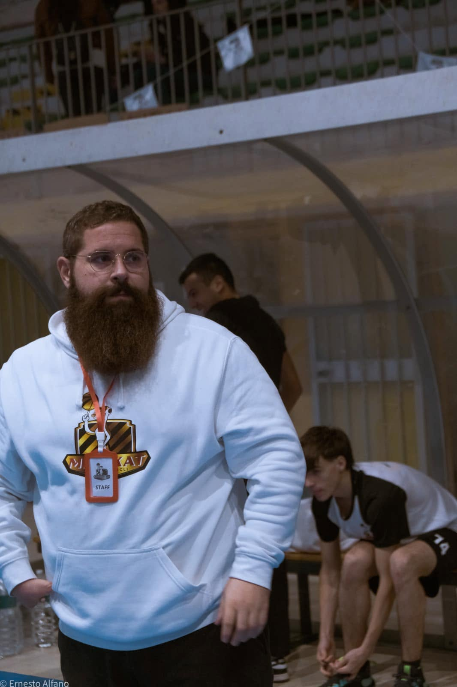
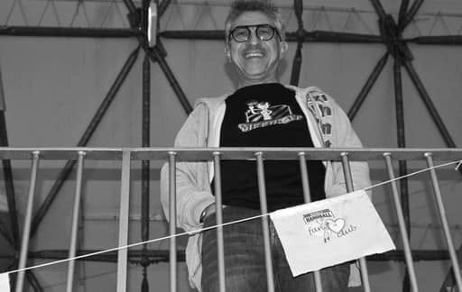
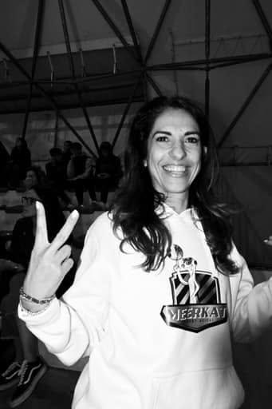
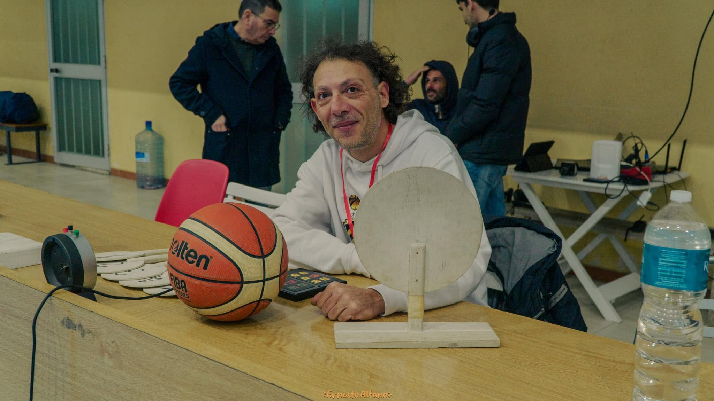
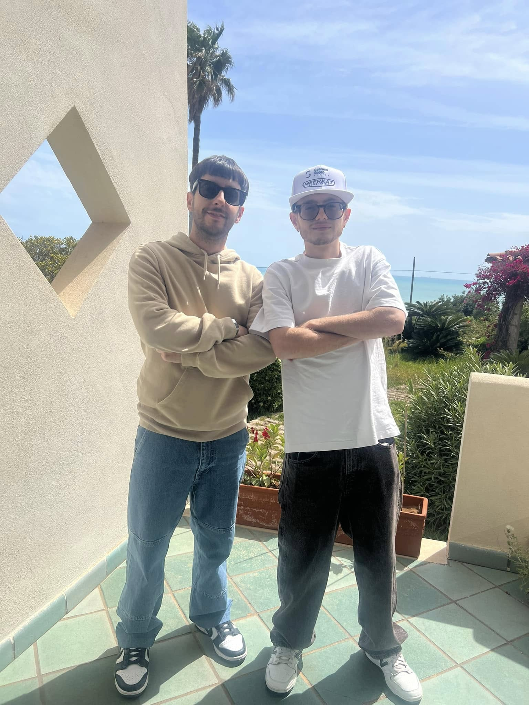
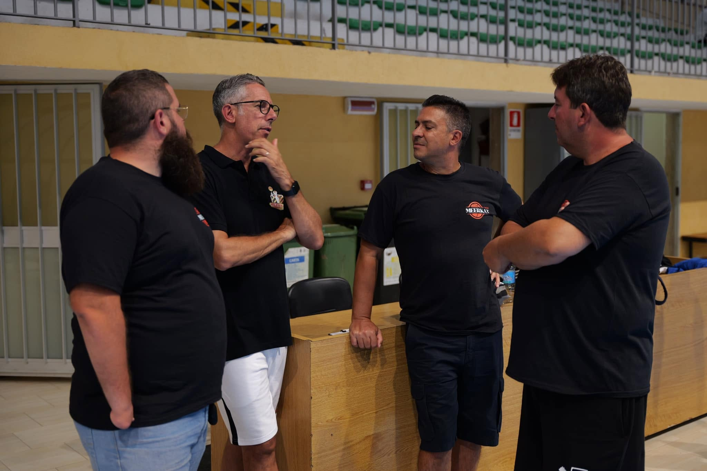
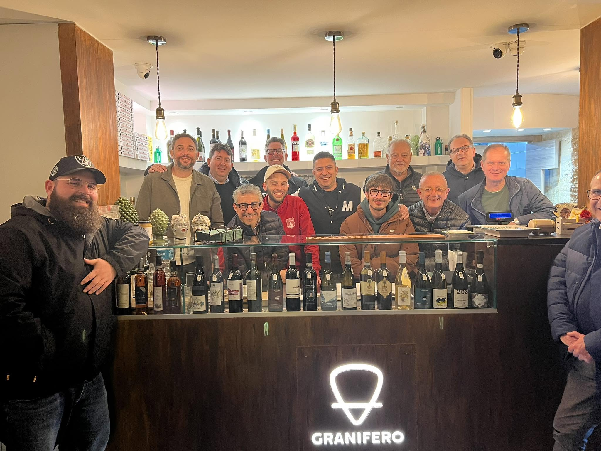
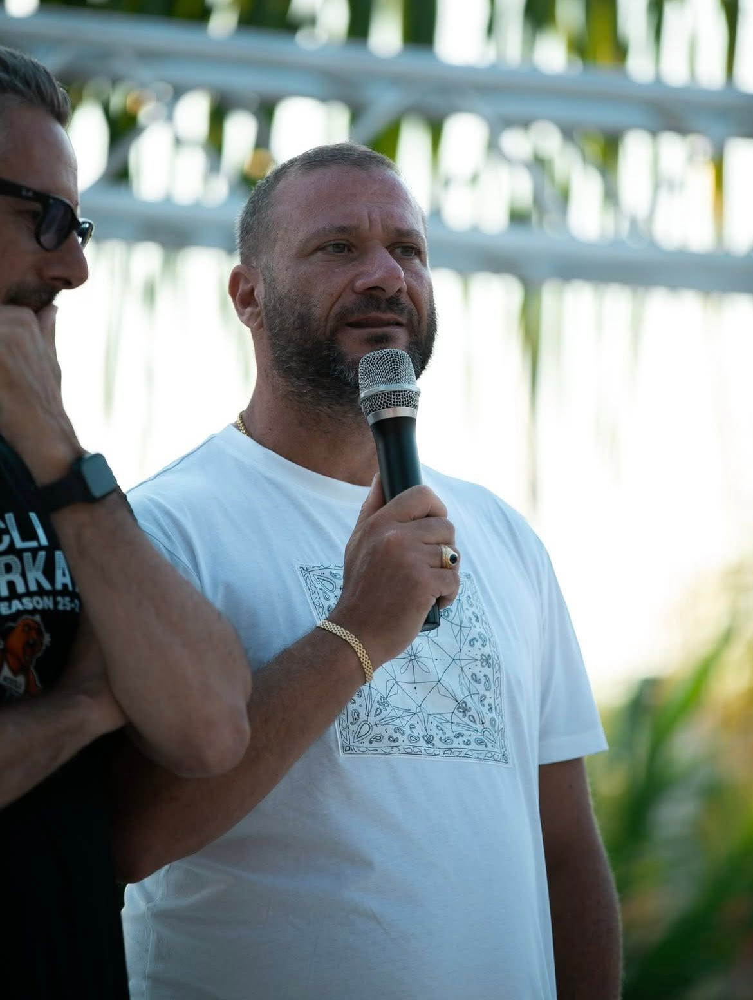
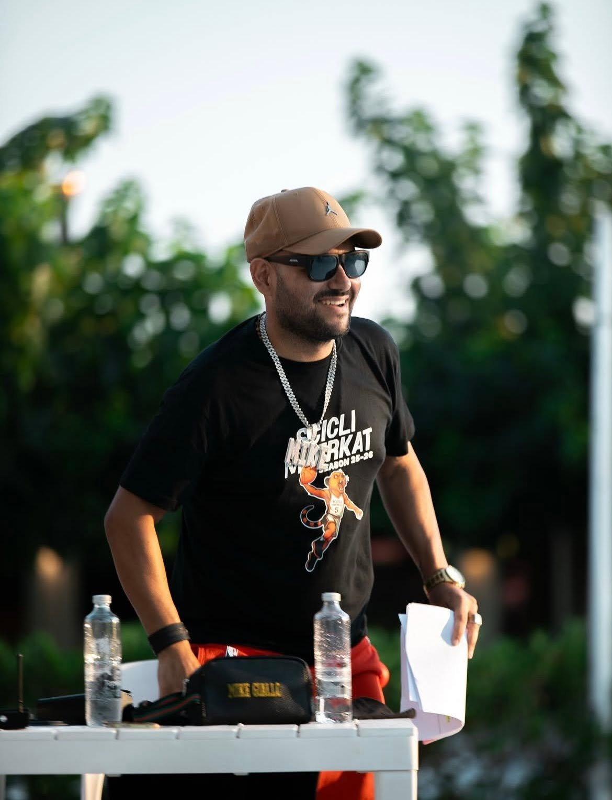
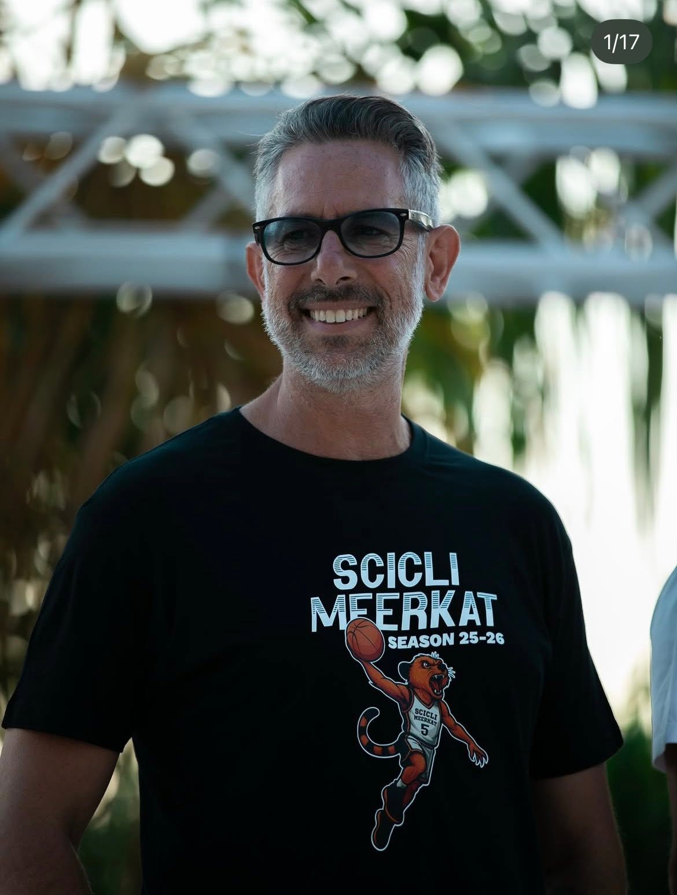
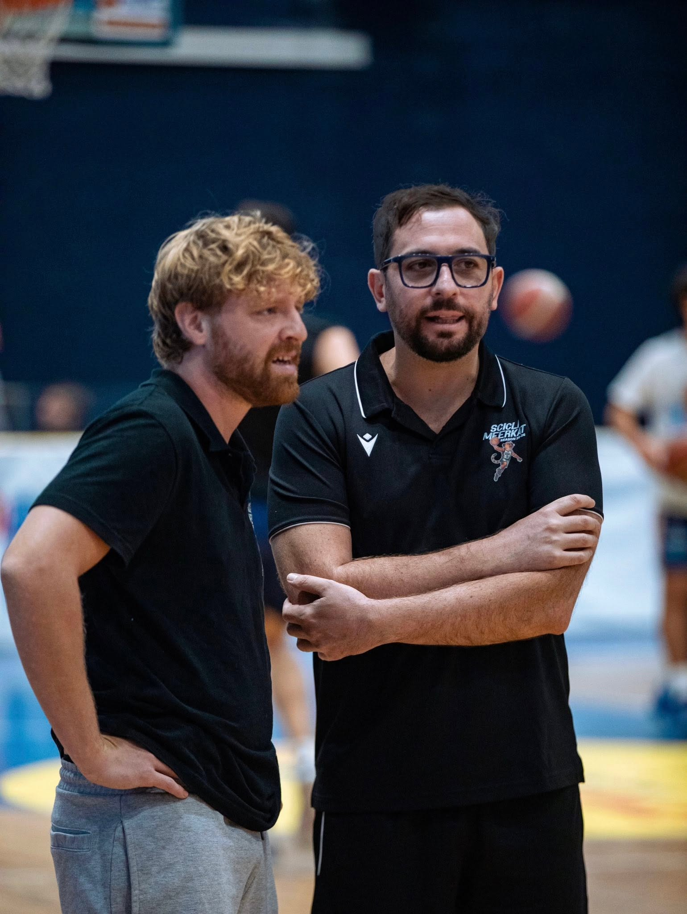
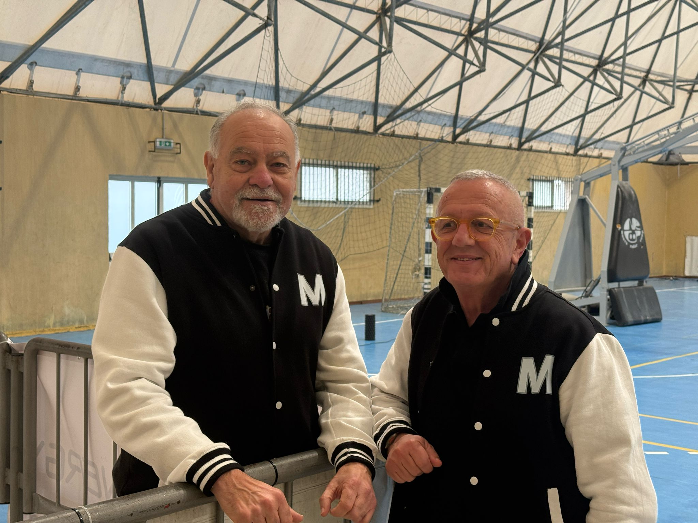